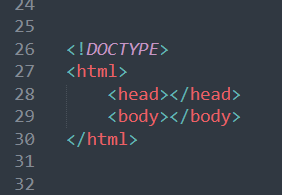
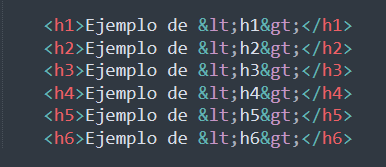

Un documento de HTML se basa en una estructura jerárquica que define todas y cada una de las partes mediante etiquetas
Todas y cada una de las páginas web siguen una estructura muy similar, simepre empezando con <!DOCTYPE> seguido de las siguientes etiquetas: <html>, <head>, <body>...
|  |
Define el título que aparece en la pestaña de los Navegadores o a los resultados de los Buscadores.
En este ejemplo puse "Apuntes de HTML" como título:
Se utilizan para determinar los títulos y subtítulos dentro de la Página Web.
Resultado:
Se utilizan para definir bloques de texto o párrafos como este.
Fuerza al texto a empezar en una línea nueva.
Crea un espacio en blanco que no se deshace entre líneas.